基于真实软件界面的产品演示
把题目拆成结构，
把结果交付成证据。
MModels 不是把答案丢给你的聊天窗口，而是一套围绕数学建模项目组织起来的工作台：项目、题意、数据、方法、实验、图表和论文始终在同一条可复盘链路上。
已展示真实软件截图可替换为你的正式产品素材
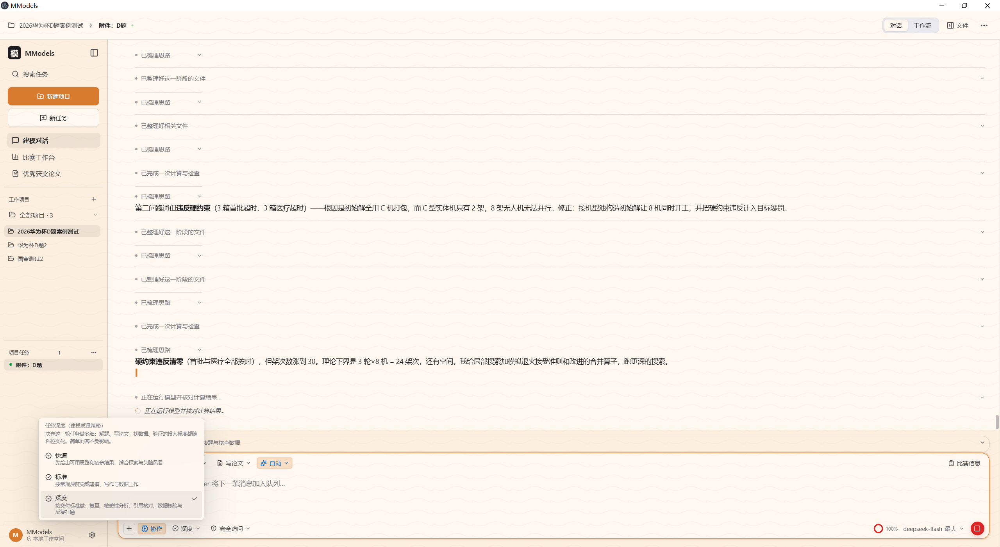
01 / 建模对话题目、附件、任务流和模型运行状态在一个项目里
项目上下文01从当前赛题、附件到任务记录
工作模式03自由对话 · 写论文 · 画图 · 评审
图表资产157+按建模表达方式组织的图表模板
LOCAL-FIRST100%项目资料优先保存在本机
A先整理问题从题目和附件中提取变量、约束、目标与待验证假设。
B再组织证据用数据体检、图表、实验记录和复现材料支撑结论。
C最后交付根据比赛模板检查正文、图表、引用、页数和提交清单。
PRODUCT MAP / 01
你看到的是一个项目，不是一次孤立的问答
华为杯D题 · 真实截图已接入
01建模对话
题目与附件进入项目后，所有后续分析都能回到同一个上下文。
02比赛工作台
赛题模板、准备度、论文文件、图表数据和提交检查集中管理。
03数据与图表
从数据文件到投稿级图表，探索结果可以直接被论文复用。
04智能体协作
项目主助手负责汇总，题意解析员、计算实验员和资料核验员分工推进。
02 / MODELING WORKFLOW
从一段原题，走到一份
可以交付的答案。
真实截图显示，MModels 已经把“题目—数据—模型—图表—论文”拆成可以追踪的任务节点。网页用同样的顺序解释每一步产生什么。
实际工作台里的任务入口不是从空白聊天开始，而是先选择任务目标
截图中的模式菜单包含自由对话、写论文、画图、评审和找数据。用户可以根据当前阶段切换任务，避免每次都重新解释项目背景。
- 写论文从题目出发组织完整建模论文
- 画图从数据和实验结果生成论文图表
- 评审按照竞赛标准检查并给出修改建议
- 找数据查找、核验并下载公开数据集
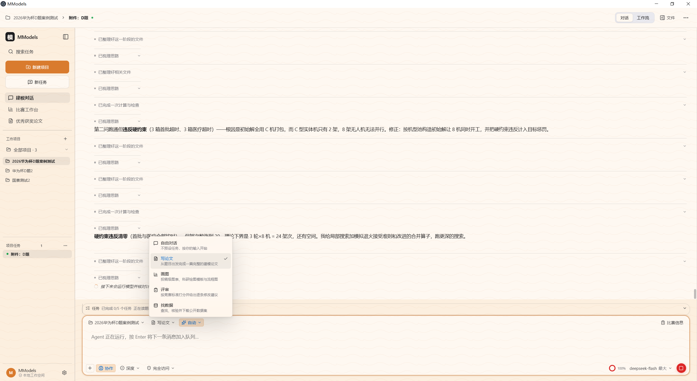
从一个入口切换不同的建模任务
01FRAME题意解析与假设
把自然语言拆成目标函数、约束条件、决策变量和评价指标，生成可讨论的建模地图。
题意解析假设清单变量关系
真实界面：项目附件、题目上下文、已整理思路
02SOLVE方法选型与求解复现
从技能库和算法模板中寻找适合的方法，记录运行参数、实验结果和可复现材料。
算法技能实验记录运行验证
真实界面：技能、算法与模板中可见 58 项技能
03CHECK数据检查与稳健性
先识别数据问题，再用图表和参数扰动检查结论是否稳定，把边界写进论文。
数据体检误差区间敏感性分析
真实界面：CSV 文件、字段选择、图表类型与导出按钮
04DELIVER论文成稿与提交检查
把模型、图表、引用和复现材料收拢进竞赛模板，再根据提交清单逐项复核。
论文模板评审修改提交检查
真实界面：比赛准备度、页数、论文文件、结论依据和提交清单
每一步都留下可继续使用的产物题目结构 · 候选方法 · 数据证据 · 图表资产 · 论文草稿 · 提交状态
03 / AGENT COLLABORATION
一支围绕同一项目
并行推进的建模小组。
截图里的协作图不是抽象概念：项目主助手负责汇总，题意解析员、计算实验员、资料核验员等角色沿着任务树接收和回传结果。
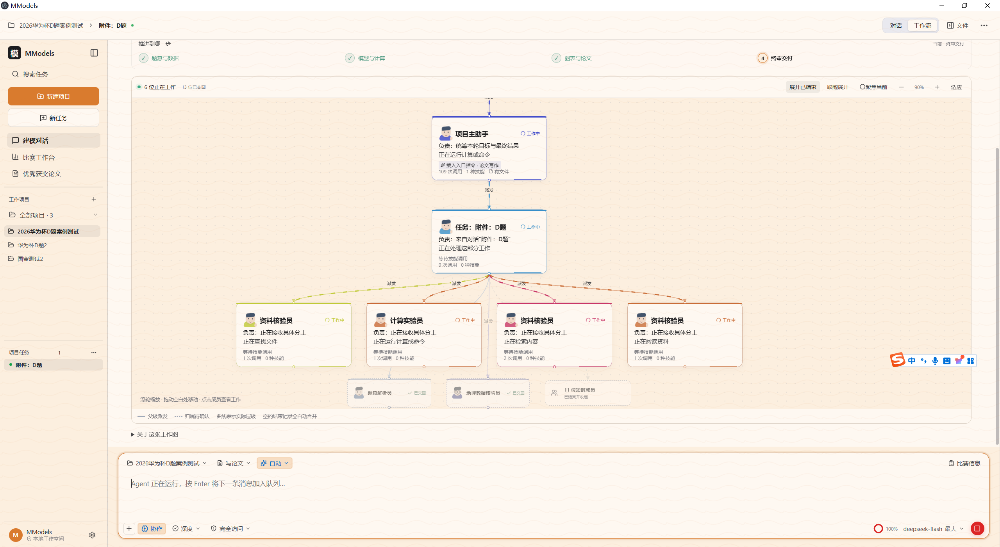
一个任务拆成多个角色后，状态和派发关系仍然可见
COLLABORATION GRAPH每个角色都有责任边界和回传路径
从截图可以看到，协作工作流包含项目主助手、任务节点、计算实验员、资料核验员、题意解析员以及已经交回结果的成员。用户可以沿着连线理解：谁在做什么，结果回到哪里。
1项目主助手
多角色并行处理
可追踪成员详情与技能调用
M
PROJECT ORCHESTRATOR项目主助手
统筹本轮目标与最终结果，把题意、数据、实验和论文任务串成一条主线。
汇总项目上下文
∫
MODEL & EXPERIMENT计算实验员
接收具体分工，运行计算或命令，保存实验结果并把可复现材料回传给项目。
正在运行计算命令
文
RESEARCH & REVIEW资料核验员
检索内容、阅读资料、核对来源，让论文里的方法和数据都有可解释的出处。
等待技能调用
MEMBER DETAIL协作不是黑盒，成员详情会留下责任和技能记录
真实界面可以查看成员负责人、任务描述、使用的方法以及每项技能的调用次数。对于比赛复盘和论文核验，这些记录比一句“AI 已完成”更有价值。
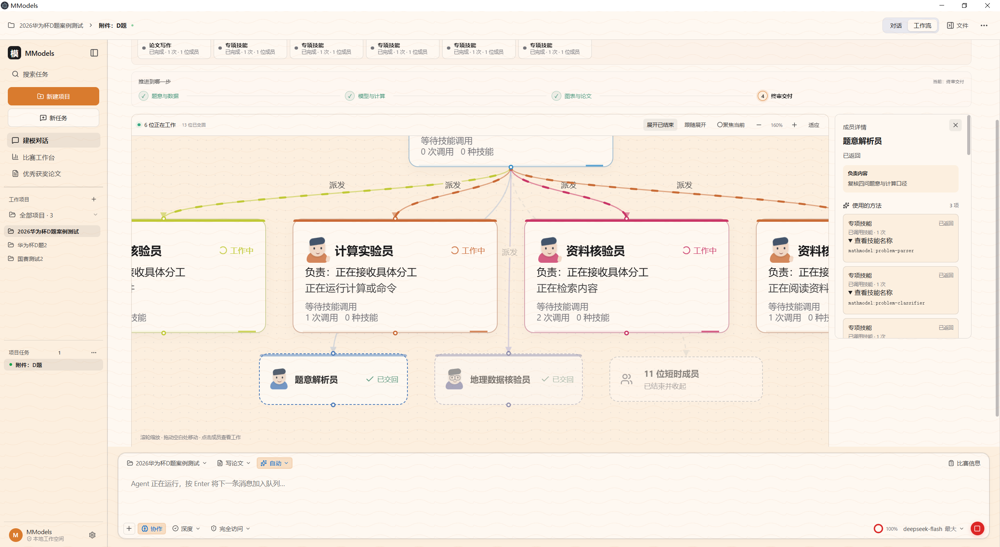
成员详情：负责人、方法、技能调用与交付状态04 / DATA & CHARTS
让数据先说清楚，
再让模型开始推理。
截图展示的是实际的数据与图表模块：左侧保留项目中的 CSV 文件，右侧根据字段选择绘图，并支持 PNG、SVG 和复制结果。
DATA WORKBENCH从文件选择到图表导出，过程都在同一页完成
真实截图里可以看到多个 q1 数据文件和边界数据文件，用户选择折线图、X/Y 字段和指标后，图表立即反映当前项目数据。这个界面适合强调“数据和模型实验不会散落在不同工具里”。
CSV / TSV字段选择折线图PNGSVG复制
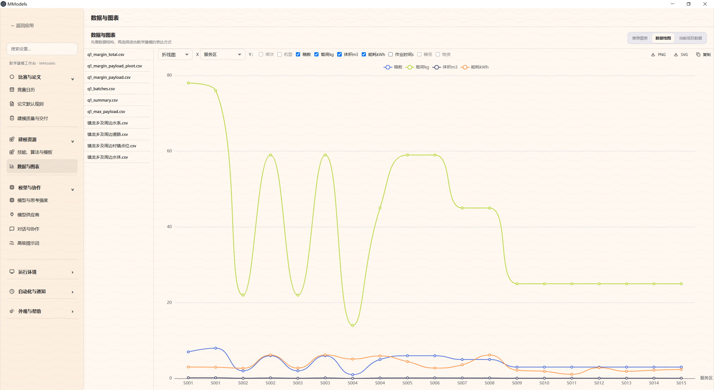
真实图表工作台：文件、字段、图例和导出操作同屏
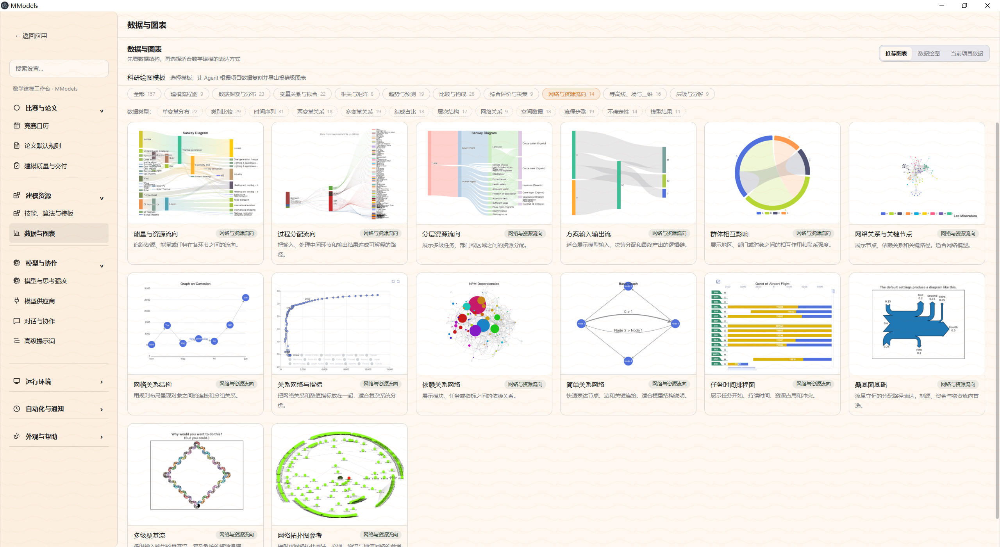
网络与资源流向适合路径、分配和关系结构
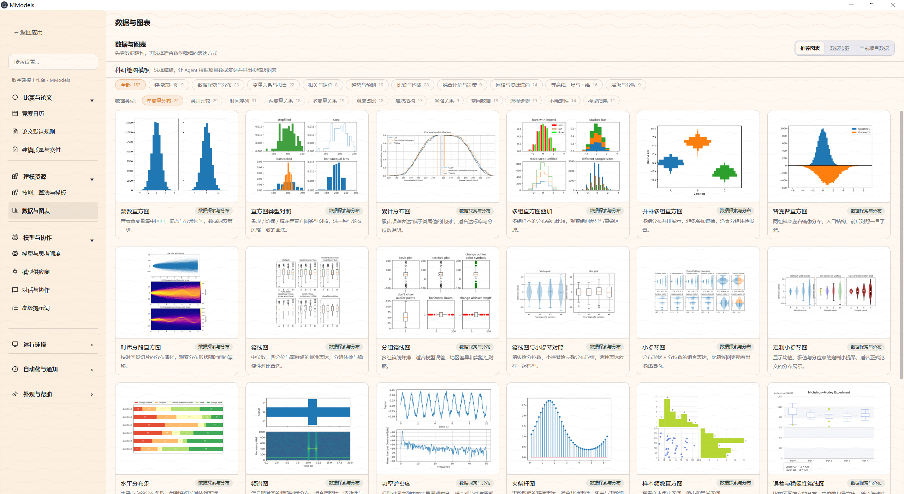
数据探索与分布直方图、箱线图、累积分布
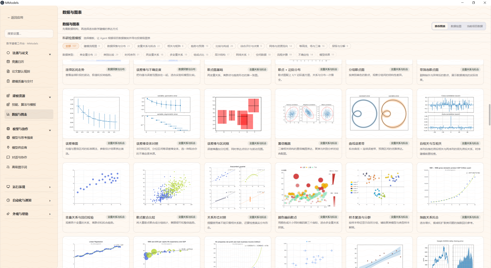
变量关系与拟合散点、回归、相关性和误差
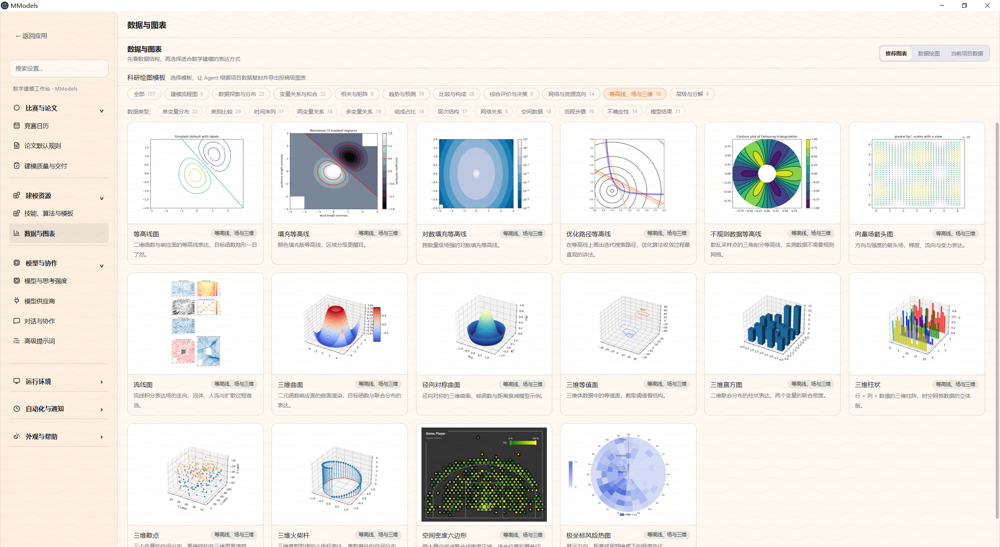
等高线与三维表达优化路径、曲面、场与三维结构
图表不是装饰，而是论文中的证据单元。同一份实验数据可以继续被用于模型解释、结果对比、敏感性分析和正文插图。
05 / PAPER DELIVERY
结果不是终点，
交付才算完成。
比赛工作台的真实截图已经把“论文交付”拆成了可检查的项目：比赛信息、页数要求、论文文件、图表与数据、模型方案、结论依据、复现材料、技能执行和提交清单。
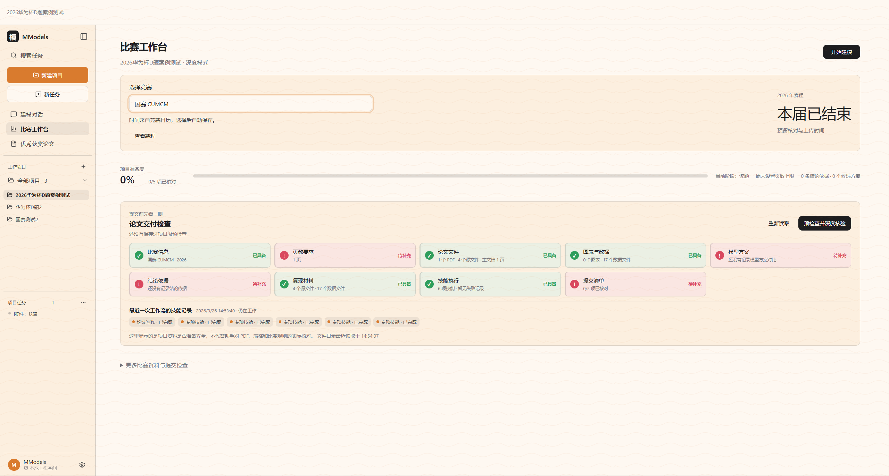
比赛工作台：准备度、论文交付检查项和待补齐内容
SUBMISSION READINESS把“论文写完了吗”变成逐项可检查的问题
截图中的检查卡片把交付拆成多个具体状态：已具备、待补充、待复核。这样用户可以先找到缺口，再继续回到建模、数据或论文环节补齐证据。
比赛信息页数要求论文文件图表与数据模型方案结论依据复现材料技能执行提交清单
01确定赛事模板队伍、页数、正文范围
02沉淀模型证据结果、图表、复现材料
03生成论文内容摘要、正文、图表说明
04提交前复核格式、引用、清单
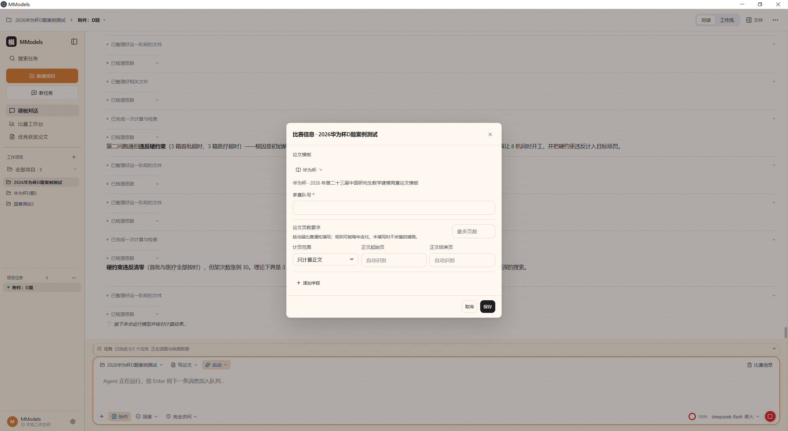
赛事信息先设定，后续检查才有依据论文模板、参赛队号、页数与正文范围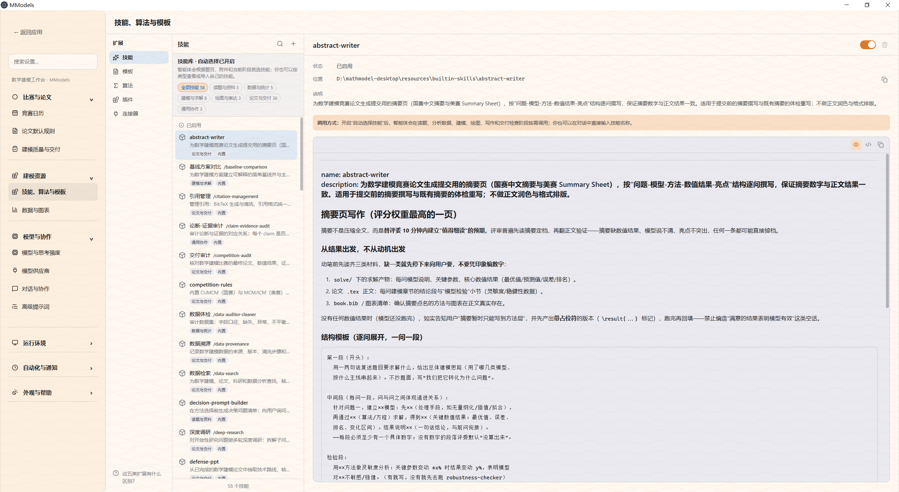
技能库把复杂方法变成可调用的项目能力摘要写作、数据审计、引用管理、竞赛检查06 / COMPETITION RHYTHM
把全年比赛，
排成一条可执行的节奏。
真实产品里已经有比赛工作台和新手教程。营销页面要把它们解释为一条完整的备赛路径，而不是单独的日历功能。
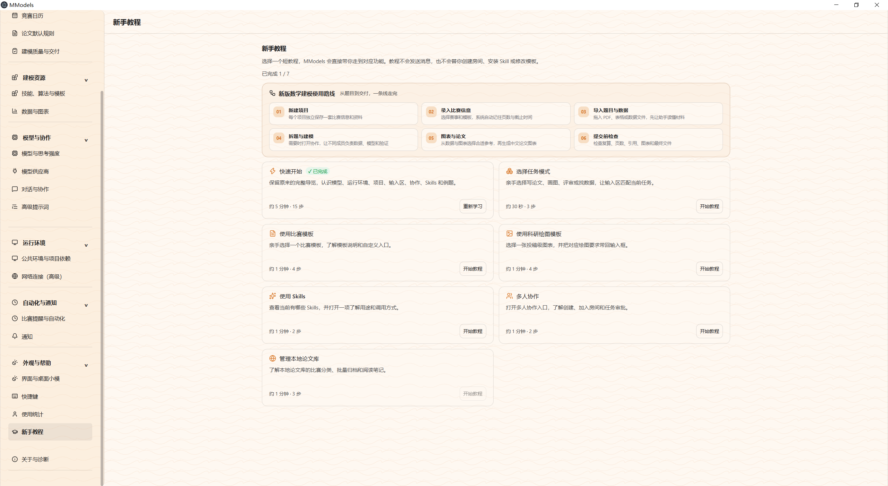
新手路线：新建项目、录入比赛信息、导入题目与数据、拆题建模、图表论文、提交前检查FROM FIRST OPEN TO COMPETITION DELIVERY让第一次使用也有一条清晰的路线
截图里的新手教程已经把产品使用过程拆成 7 个入口：快速开始、选择任务模式、使用比赛模板、使用科研绘图模板、使用 Skills、多智能体和管理本地论文库。
- 建立项目保存比赛信息和附件
- 进入工作流选择写论文、画图、评审或找数据
- 积累资产把图表、论文和复盘留在本地项目里
01
准备确定比赛模板
队伍信息、页数要求、论文范围和交付标准。
项目建立02
拆题导入题目与数据
把附件、数据、假设和任务分工放进同一上下文。
工作流启动03
建模实验、图表与复现
用候选方法、数据图表和实验记录支撑结论。
证据沉淀04
交付论文检查与复盘
按提交清单补齐缺口，再把项目留下供下一次复用。
准备提交YOUR WORKSPACE, YOUR RHYTHM从外观到任务深度，都可以按自己的建模习惯调整
软件还提供任务深度、技能自动选择、协作规模、主题和桌面小模等设置。营销页面会把这些放在“可持续使用”的产品能力里，而不是当成孤立的设置项。
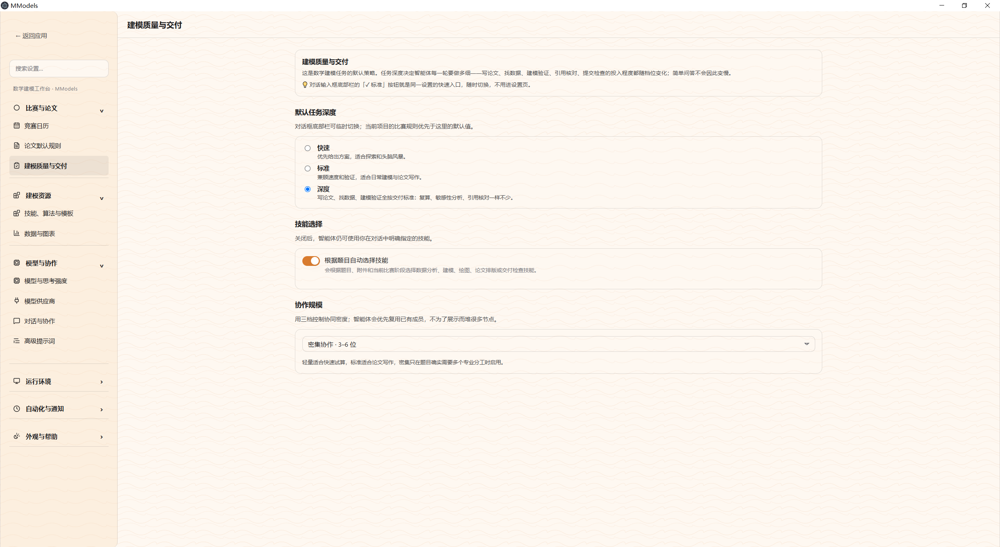
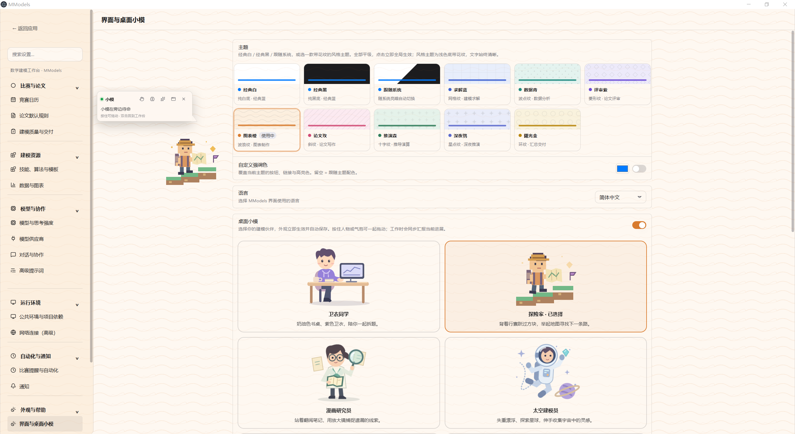